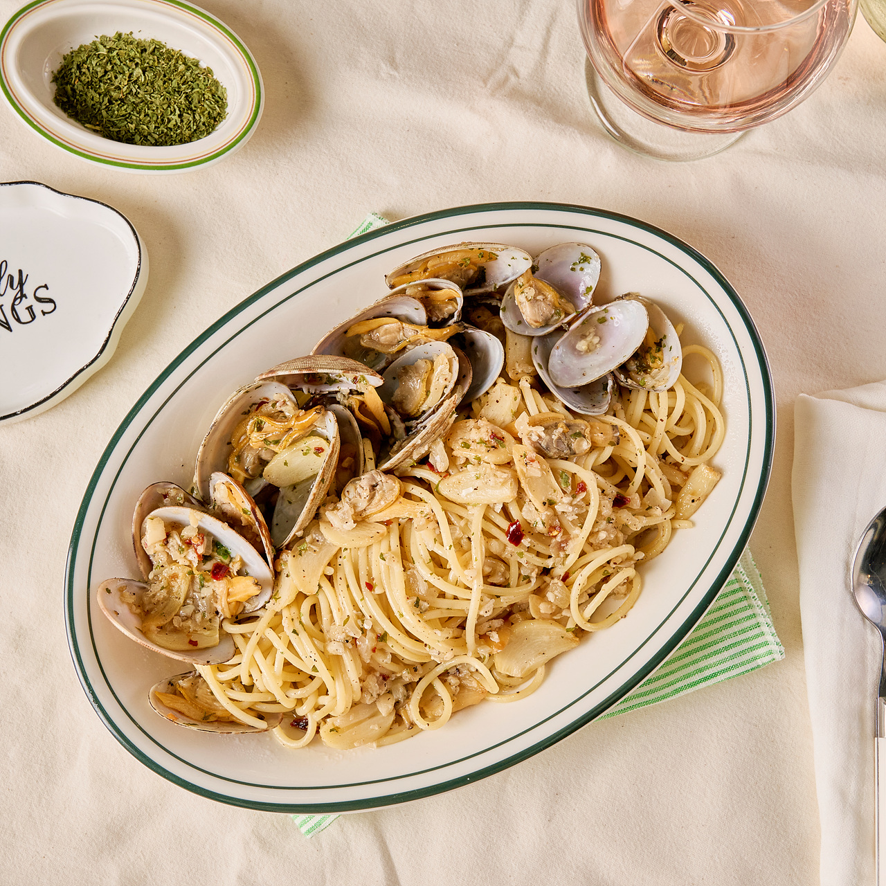

먹고 싶은 걸 말하면,
잇티웨이가 찾아줍니다
"강남역 근처 조용한 파스타집" 처럼 그냥 말하면 돼요. 영수증으로 인증된 진짜 리뷰만 모아, 취향에 맞는 맛집을 골라드립니다.
인기 검색
강남역 근처 조용한 파스타집 알려줘
잇티 AI
조용한 분위기의 파스타집 2곳을 찾았어요. 리뷰 기반으로 정리해드릴게요 🍝
파스타우연
98% 일치테이블 간격이 넓고 대화 소음이 적다는 리뷰가 많아요. 2인 방문 후기 비중이 높습니다.

우기파스타
91% 일치단독 룸이 있어 조용한 식사에 적합. 예약 후 방문 후기가 많습니다.
식사 후엔 산책 어떠세요? 도보 5분 거리에 봉은사로 가로수길 코스도 함께 추천드려요 🚶
오후 7:42맛집 찾는 모든 과정을
한 곳에서
검색부터 리뷰, 대화까지. 흩어져 있던 맛집 경험을 잇티웨이 하나로 묶었습니다.
지도에서 바로,
지금 갈 수 있는 곳
현재 위치 기준으로 카테고리와 가격대를 걸러 보세요. 마커를 누르면 리뷰와 길찾기까지 한 번에 이어집니다.
-
가게명 · 메뉴명 동시 검색
"김치찌개" 처럼 메뉴로 찾아도 결과가 나옵니다. -
카테고리 · 가격 필터
한식/양식/중식/일식/카페 + 1만원 이하부터 단계별 가격대. -
즐겨찾기 · 길찾기 연동
마음에 드는 곳은 저장하고, 바로 길찾기로 넘어갑니다.
3단계로 끝나는 맛집 찾기
01
검색
조건을 말합니다
지도에서 필터로 좁히거나, AI에게 문장으로 물어보세요. 음식 취향 찾기 결과가 있으면 취향까지 반영됩니다.
02
확인
진짜 리뷰를 봅니다
영수증으로 인증된 방문자 리뷰와 긍정/부정 태그 분포로 분위기와 맛을 미리 파악합니다.
03
공유
같이 갈 사람을 찾습니다
잇티챗 오픈채팅에서 참가코드로 모이고, 다녀온 뒤엔 리뷰로 기록을 남깁니다.